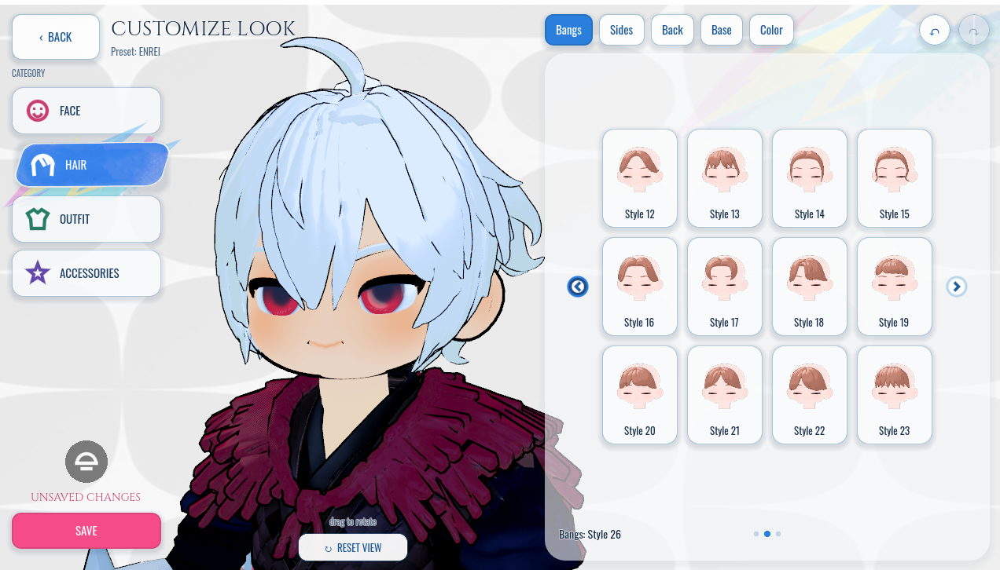
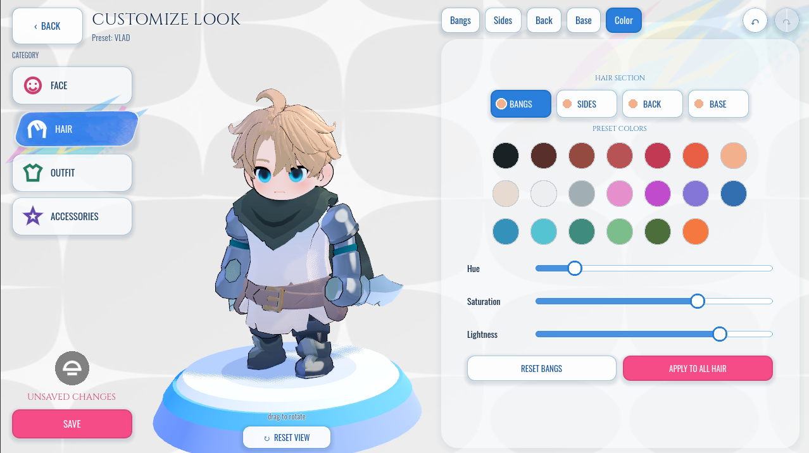
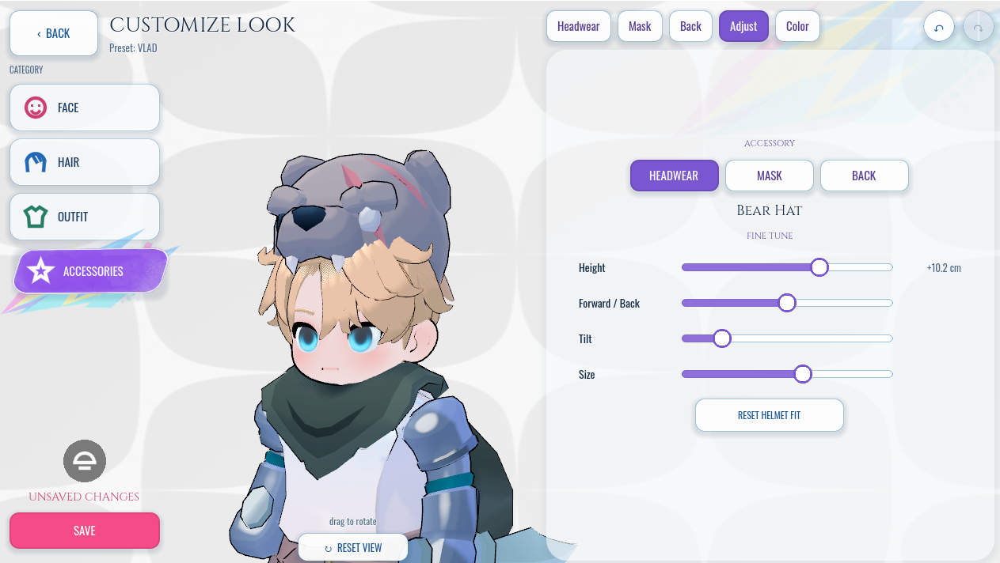
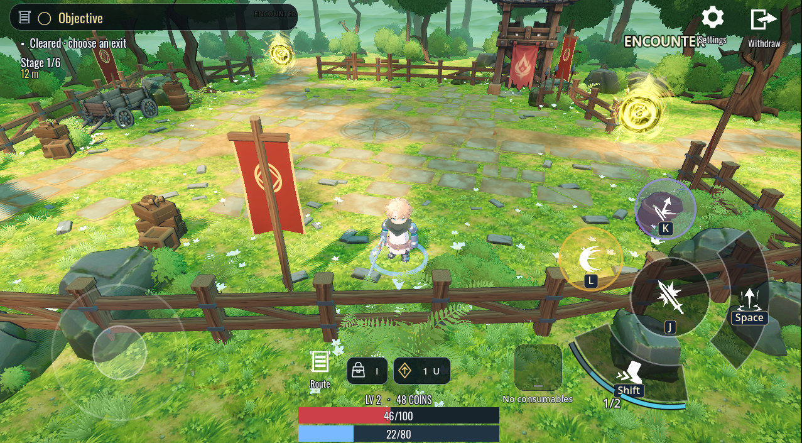
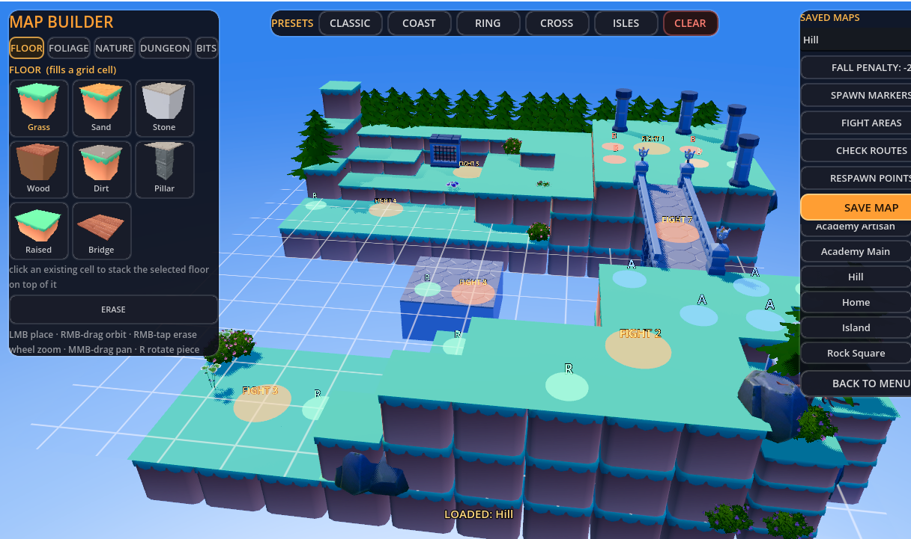

My aim is to give players a fighter that feels like their own, then carry that identity through the rest of the game. The prototype brings together detailed appearance editing, saved combat setups, social battle rooms and explorable spaces.
A character creator built around player identity
Customization is a substantial part of the game. Face, expression, hair, outfit and accessories work together in a live 3D preview, with saved Looks that carry into loadouts, rooms and combat.
{kind=link}

Modular appearance
Combine bangs, sides, back and base hair pieces; adjust their colors; choose face and expression; and mix outfit tops, arms and bottoms with headwear, masks and back accessories.
Made for experimentation
Live preview, camera rotation, category framing, undo/redo and Save as New let players explore variations. Unsaved edits remain a draft, and saving a new Look preserves the original.
Appearance and combat stay distinct
A Look defines appearance. Weapons and their compatible styles define how the fighter plays. Saved loadouts bring those choices together without making the player rebuild their character.
{kind=link}

{kind=link}


The design accomplishment: turning a deep character-authoring system into an approachable player interface. Visual catalogues, consistent selection states and contextual previews make a large set of choices easier to explore.
PvP, battle rooms and playing together
The arena side has its own complete preparation flow: find or create a room, display each fighter in a 3D lobby, arrange teams, choose a map, ready up and enter battle. Rooms support up to eight seats, with players and bots represented in the same roster.

Arena modes
Point Battle and best-of-three Team Deathmatch share the room setup. Team colors connect lobby podiums to in-match markers, and returning from a match keeps the room available for another round.
Readable multiplayer setup
Player appearances, team assignments, map choice and readiness are visible before a match starts. Character-loading readiness prevents the battle from beginning before participants have the required appearance data.
Friends, companions or bots
PC and Android players can play together through cross-play. Online/LAN rooms support human opponents; explicit offline rooms support local bot matches. Cooperative missions add party preparation, companions and shared travel, while each player manages their own expedition build.
Beyond the standard arena: a separate Battle Royale prototype uses a crumbling island and shrinking safe ground. It explores positioning and survival with the same underlying fighter systems.
A world to prepare in and fight through
The Home Room and Academy give the character a place outside combat. Together with the loadout screens and battle rooms, they turn individual features into a game the player can move through.
Home and navigation
The Home Room keeps the player character present behind the interface. Layered category artwork, separate hover and selection states, and responsive controls connect the major destinations.
Academy and party flow
Explore the Academy, approach NPC services, accept a mission and prepare companions before leaving through the Frontier Gate. Nearby prompts connect menus to places and characters in the world.
Expeditions and progression
Six-stage runs branch through Watchpost, Riverside and Bandit layouts. Enemy waves, recovery and supply stops lead into XP rewards, three core build slots, a grid inventory and extraction back to Academy Gold.
{kind=link}


Recent iteration: playtest feedback led to more useful loot, clearer objectives, overlapping enemy waves and shorter pauses on successful hits. Room checkpoints preserve progress between sessions. Expeditions extend the wider game rather than replacing its arena and customization systems.
The tools and interface work behind the game
Map authoring
The map builder provides a visual palette, live 3D thumbnails, placement previews, rotation and grid-based floors. Spawn, respawn and fight-area markers connect the layout to gameplay; maps can be saved and loaded for testing.
Character and combat tooling
A separate developer editor, pose-review tools, editable weapon data and live environment/VFX tuning support deeper production work. The wardrobe presents focused cosmetic choices and accessory adjustments around the live character.
Consistent presentation
Persistent preview scenes and cached catalogue images keep the fighter visible while browsing. Hair color edits update materials directly, and catalogue mannequins stay neutral so player changes do not recolor every option.
{kind=link}

PC and phone layouts
Menus adapt spacing, catalogue columns, touch targets and display cutouts to the available screen. Swipes, color sliders and the native phone keyboard support the same saved Looks used on desktop.
Details that protect player work
Draft editing, undo, named copies and recoverable saves support experimentation. Existing player appearances remain readable as the character system grows.
Tested in context
PC and Android builds support cross-play across multiple devices. Recorded checks also cover customization, native keyboard saving, offline Point Battle, room entry and selected co-op/reconnect flows.
A playable foundation, still growing
Implemented: modular character creation, saved Looks and loadouts, weapon/style selection, PvP battle rooms, PC–Android cross-play, support across multiple devices, bot play, walkable hubs, cooperative expeditions and authoring tools.
In active development: combat feel, new expedition encounters, animation and interface polish.
Screenshots supplied from the playable prototype show character creation, team setup, map authoring and expedition gameplay. The project has playable PC and Android builds; a public demo link is not yet provided here.